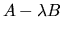

Given a matrix pair (A, B), where A and B are square n x n
matrices, the generalized nonsymmetric eigenvalue problem is to find
the eigenvalues  and corresponding
eigenvectors
such that
and corresponding
eigenvectors
such that
More precisely, x and y are called right eigenvectors.
Vectors
or  satisfying
satisfying
Sometimes the following, equivalent notation is used to refer to the
generalized eigenproblem for the pair (A,B): The object ,
where  is an indeterminate, is called a matrix pencil, or
just pencil.
So one can also refer to the generalized eigenvalues
and eigenvectors of the pencil .
is an indeterminate, is called a matrix pencil, or
just pencil.
So one can also refer to the generalized eigenvalues
and eigenvectors of the pencil .
If the determinant of
is identically
zero for all values of  ,
the eigenvalue problem is called singular; otherwise it is regular.
Singularity of (A,B) is signaled by some
,
the eigenvalue problem is called singular; otherwise it is regular.
Singularity of (A,B) is signaled by some
 (in the presence of roundoff,
(in the presence of roundoff,  and
and  may be very small).
In this case, the eigenvalue problem is very ill-conditioned,
and in fact some of the other nonzero values of
may be very small).
In this case, the eigenvalue problem is very ill-conditioned,
and in fact some of the other nonzero values of  and
and  may be indeterminate (see section 4.11.1.4 for further
discussion) [93,105,29].
The current routines in LAPACK are intended only for regular matrix pencils.
may be indeterminate (see section 4.11.1.4 for further
discussion) [93,105,29].
The current routines in LAPACK are intended only for regular matrix pencils.
The generalized nonsymmetric eigenvalue problem can be solved via the
generalized Schur decomposition
of the matrix pair (A, B), defined in the real case as
The columns of Q and Z are called left and right generalized Schur vectors and span pairs of deflating subspaces of A and B [93]. Deflating subspaces are a generalization of invariant subspaces: For each k , the first k columns of Z span a right deflating subspace mapped by both A and B into a left deflating subspace spanned by the first k columns of Q.
More formally, let
Q = (Q1, Q2) and
Z = (Z1, Z2) be a conformal
partitioning with respect to the cluster of k eigenvalues in the
(1,1)-block of (S, T), i.e. where Q1 and Z1 both have k columns,
and S11 and T11 below are both k-by-k,
As for the standard nonsymmetric eigenproblem, two pairs of drivers are provided, one pair focusing on the generalized Schur decomposition, and the other pair on the eigenvalues and eigenvectors as shown in Table 2.6:
The subroutines xGGES and xGGEV are improved versions of the drivers, xGEGS and xGEGV, respectively. xGEGS and xGEGV have been retained for compatibility with Release 2.0 of LAPACK, but we omit references to these routines in the remainder of this users' guide.